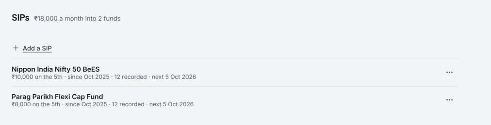

The cost of starting a SIP late, worked through
- Category
- Investing
- By
- Reviewed
- Read
- 4 min
The plan, and a delay
A SIP of ₹10,000 a month for 20 years, at 10% a year (0.7974% a month), each instalment counted at the start of its month.
The delayed plan is the same SIP with the same finish date, so it runs for fewer months: starting 12 months late, 228 months instead of 240.
The corpus at the finish: ₹72,39,867. The same SIP with a delayed start:
| Start put off by | Corpus | Less than on time | Share lost |
|---|---|---|---|
| 3 months | ₹70,39,635 | ₹2,00,233 | 2.8% |
| 6 months | ₹68,44,117 | ₹3,95,750 | 5.5% |
| 1 year | ₹64,66,784 | ₹7,73,084 | 10.7% |
| 2 years | ₹57,63,980 | ₹14,75,887 | 20.4% |
| 3 years | ₹51,25,068 | ₹21,14,799 | 29.2% |
| 5 years | ₹40,16,212 | ₹32,23,655 | 44.5% |
The first twelve months of delay cost ₹7,73,084, ₹64,424 for each month; the twelve after them add ₹7,02,803, ₹58,567 for each month. Each further month of delay costs a little less than the one before it.
The same year's delay, over a shorter or longer plan
A SIP of ₹10,000 a month, started 12 months late, finishing 10, 20 or 30 years from now:
| Years to the finish | On time | Less with a year's delay | Share lost |
|---|---|---|---|
| 10 | ₹20,14,576 | ₹2,98,057 | 14.8% |
| 20 | ₹72,39,867 | ₹7,73,084 | 10.7% |
| 30 | ₹2,07,92,927 | ₹20,05,180 | 9.6% |
What a late start would have to be
Starting 12 months late for the same finish, the SIP that reaches ₹72,39,867 is ₹11,195 a month from its first month, against ₹10,000. That is ₹1,195 a month more, for 228 months instead of 240.
With a yearly step-up
With the SIP rising 10% a year (the Goals page's step-up), the corpus after 20 years is ₹1,54,61,674.
Started 12 months late it begins again at ₹10,000 a month, so every step comes a year later too: ₹1,33,53,264, ₹21,08,410 less, 13.6%. That is a larger share than the flat SIP's 10.7%.
The working, month by month
- Each month: (the balance + the SIP) × (1 + 0.7974%).
- On time: 240 months of this, the balance at the end of month 240 being ₹72,39,867.
- Delayed 12 months: 228 months of it, the balance at the end being ₹64,66,784; the ₹7,73,084 between them is what the delay costs.
What the projection assumes
- One return, 10% a year, in every year, and no skipped instalments.
- The same finish date. A delay is measured at the date the plan would have finished; the missed months are at the start, which is when they would have grown longest.
- The same SIP. Nothing is made up in the later months unless the SIP itself is higher.
How Pocket works it out
The figures on this page are Pocket's own, from its planning engine when the page was built.
The Goals page says the same sentence for your plan, “Starting 12 months later: … less”. It works it from your SIP, your years to retirement and your step-up, and redoes it as the sliders move.

- The SIPs set up, and what they come to a month.
- Each SIP: its amount and day, since when, the instalments recorded and the next date.
Questions
What does starting a SIP a year late cost?
On ₹10,000 a month for 20 years at 10% a year, starting 12 months late and finishing on the same date takes the corpus from ₹72,39,867 to ₹64,66,784. That is ₹7,73,084 less, 10.7% of it, for ₹1,20,000 not paid in. The cost of a delay is in the growth the money would have had, not only in the instalments missed.
Is the cost the same at any age?
A year's delay is 14.8% of a 10-year plan's corpus, 10.7% of a 20-year one's and 9.6% of a 30-year one's: a smaller share the longer the plan. In rupees it is the other way, ₹2,98,057, ₹7,73,084 and ₹20,05,180, because the longer plan has more to lose.
Is a SIP counted at the start or the end of the month?
At the start, as a SIP debit is, in the delayed plan as in the one that starts now.
Sources
- Pocket's planning engine: cost_of_delay, the SIP counted at the start of each month and the same finish date
- AMFI: how a systematic investment plan works
Previous guide: Step-up vs flat SIP, worked through
Pocket is free on Windows, macOS, Linux and Android, and keeps everything on your own device: download Pocket.